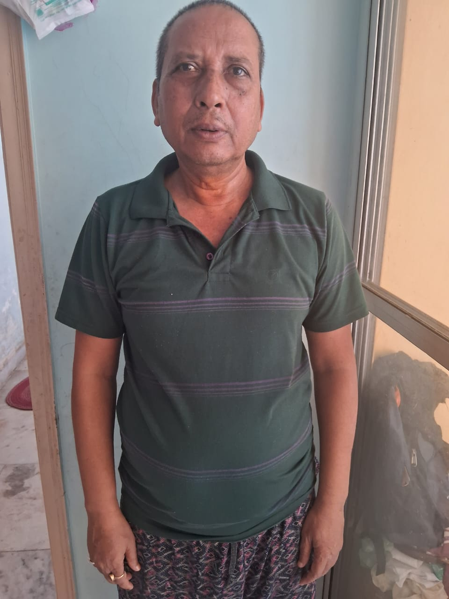
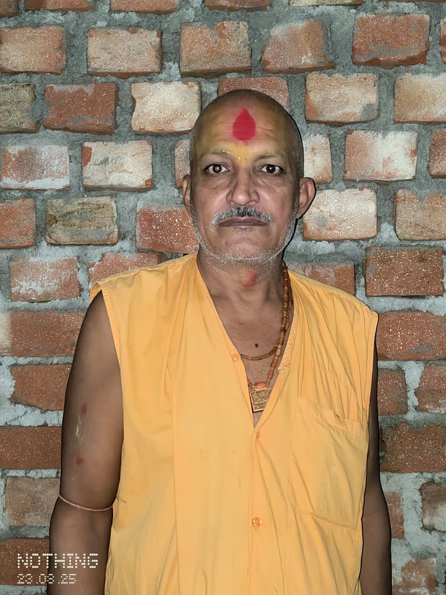
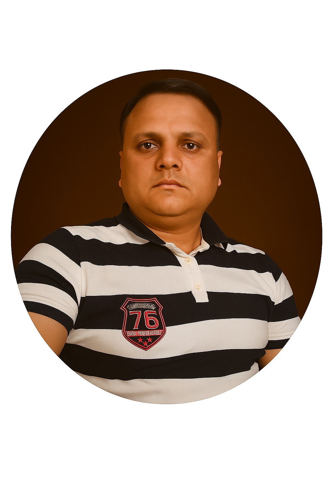
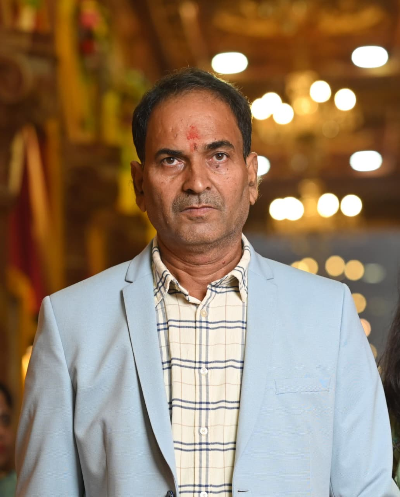
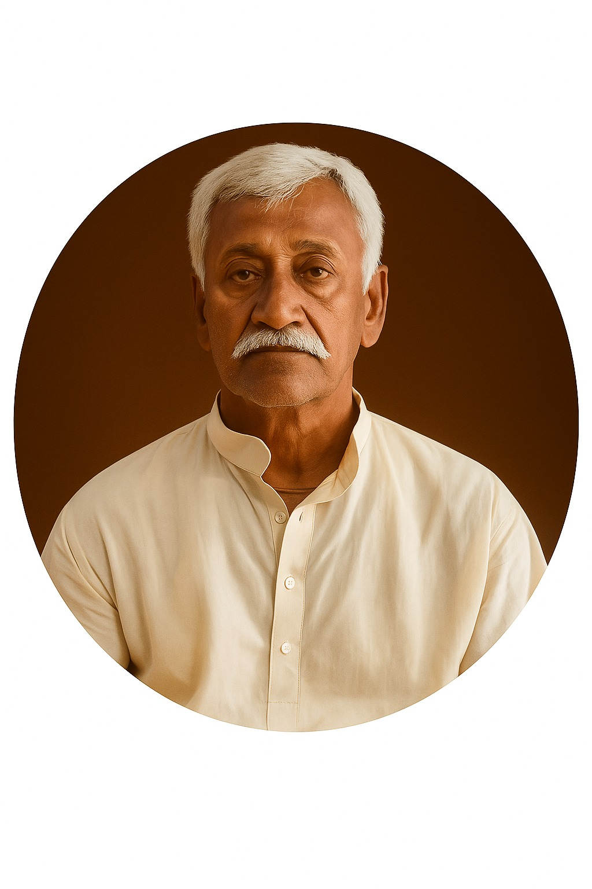
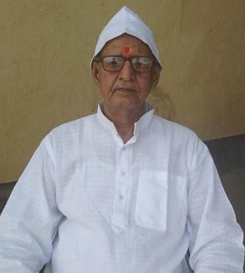
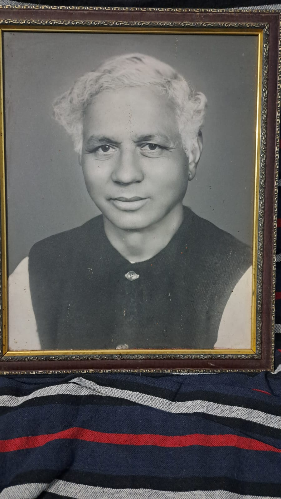

About Us
Gallery
History
Members
Volunteers
Contact Us
समिति पदाधिकारी
Home
History
2013 – वर्तमान
राधेश्याम विद्यार्थी
अध्यक्ष
2013 – वर्तमान
शरत कुमार गौतम
सचिव
2005 – 2013

संजीव कुमार
अध्यक्ष
2005 – 2013

वीरेश भारद्वाज
सचिव
2000 – 2005
अरुण कुमार
अध्यक्ष
2000 – 2005
वीरेश भारद्वाज
सचिव
1999
मृत्युंजय कुमार
अध्यक्ष
1999

संतोष कुमार
सचिव
1994 – 1999
प्रमोद कुमार
अध्यक्ष
1994 – 1999
विजय नारायण सिंह
सचिव
1990 – 1994

अशोक कुमार
अध्यक्ष
1990 – 1994
रणजीत कुमार
सचिव
1985 – 1990
जय कुमार सिंह
अध्यक्ष
1985 – 1990
योगेन्द्र प्रसाद सिंह
सचिव
1983 – 1985

सुरेश कुमार सिंह
अध्यक्ष
1983 – 1985

राम शंकर प्रसाद सिंह
सचिव
1980 – 1983
सत्रुधन प्रसाद सिंह
अध्यक्ष
1980 – 1983
मुरारी मोहन प्रसाद सिंह
सचिव
1937 – 1980
शुशील कुमार सुधांशु
1937 – 1980

रामकिशोर प्रसाद सिंह
1937 – 1980
चंद्रमौलि शाही
1937 – 1980
योगेंद्र प्रसाद सिंह
1937 – 1980
सूर्यनन्दन शाही
1937 – 1980
चन्द्रिका प्रसाद सिंह
1937 – 1980
जगन्नाथ प्रसाद सिंह